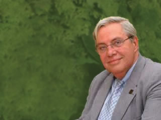

Photo: Debora 70
Caros Amigos Magazine (# 93 / 2005)
The professor and “Senhorita Carioca” “Senhorita Carioca captured me from the very first moment” said the professor in his letter of recommendation for the project. The “excellent research, the modern, light format with its accessible text perfectly integrated with the illustrations all reveal the originality of authors Tomil Gonçalves and Raquel Boechat in taking the reader on a journey through time and space in the City, combining both content and entertainment. Carlos Lessa Author of 12 books, Carlos Lessa is a reference for students and researchers. His 20,000-volume personal library is recognized as being one of the most specialized of its type on the history of Rio de Janeiro and Brazil. With a Doctorate in Economics and professor at UN institutions and in countries of South America, Carlos Lessa holds the chair of Brazilian economics at the federal University of Rio de Janeiro - UFRJ, where he coordinated the Centre for Legal and Economic Sciences - CCJE/UFRJ - and of which was the Rector in 2002. He has also been the President o the BNDES, National Economic and Social Development Bank. |
|  Photo: Debora 70 Caros Amigos Magazine (# 93 / 2005) |
|
|||
|
||||